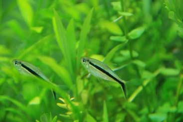

Photograph the Aquarium
HOW TO PHOTOGRAPHING FOR ONLINE COMPETITIONS & FORUMS
Taking photos of the aquarium and it's inhabitants can be difficult and frustrating. Aquarium lighting, glass and coloration make it extremely challenging to take a realistic, focused picture that represents the correct color and lighting we see from the human eye. Over exposures, under saturation and blurred photographs are the most common frustrations. Taking beautiful pictures of the aquarium is not as hard as first led to believe. With patience, practice and adjustment of the necessary settings it will become easier over time.
Professional camera equipment is not needed to take realistic aquarium photographs. The iPhone 6, Galaxy S6 and HTC M9 are all phones equipped with stunning cameras & processing software. Point and shoot cameras have also come a long way and are more than sufficient when photographing the aquarium. DSLR cameras can and do help to take better photos, however the key to a good aquarium photo is not in the camera but in the editing and lighting.
When photographing fish specifically, developing a picture that is not blurred is extremely difficult. Using a flash to help facilitate and brighter and faster photograph will aid in giving a still photograph of the fish but at the expense of teh reflection in the photograph. On the other hand, not using the flash will often result in the fish being blurred and not sharp. Below are some pointers that will hopefully set you on your way to taking some great photographs.
Camera Equipment needed
- Camera (DSLR, Point & shoot or phone)
- Clear Tape
- Lamps, flashlights, external lights
- A3 paper sheets or white cloth
- Tripod
- Dark room & dark clothes

Photographing the Entire Aquascape

- Aquarium photos suitable for contests and blog's can be challenging to take but extremely rewarding. It is important to give your aquarium a stunning realistic photo to ensure it is done justice when viewed by others who cannot see your aquarium in the same room.
- Shoot photos at night where there is no natural light to interrupt and spoil the colorations of the aquarium. Turn off lighting near the aquarium to avoid reflections and wear darker clothing.
- Take photos from directly in front of the aquarium at the same height as the center of the tank. This will give enhance perspective and emphasize depth. White A3 Paper or a tablecloth can be stuck to the rear of the aquarium to give the aquarium a modern and clean white finish.
- Take photographs from other angles and distances for proof of ownership and differing perspectives. Interesting shots for forums and blog's include 45 degree at the corner, directly in from the side/rear of the aquarium and top down view of the plants and substrate.
- When photographing the aquarium be sure to take photo upon photo. Digital media allows for an almost unlimited number of captures. When post processing there will then be many shots to choose from at different focal lengths and colors. Choice is important as the end photograph will be of a much higher caliber. Experiment with aperture, white balance, ISO and exposure to give a solid portfolio from which to choose your favorite shots.
- Some smart phones and DSLR's have HDR capability which lightens darker parts of the image and vise versa. Be sure to turn this on as it can often improve aquarium shots.
- If using a DSLR be sure to shoot all photos in RAW format. This will allow for a higher level of correction and adjustment in post processing.
- ADA aquarium entrants often use external lights on specific tank regions to highlight specific areas of the tank. By setting the camera on a tripod at the correct focal length it is possible to continuously adjust lighting, exposure and ISO until the perfect photo has been achieved.

Photographs with Flash

- The photo on the right is prime example of a poor use of flash photography when taking photographs of the aquariums inhabitants. The flash reflection is clearly visible in the photograph above the fish. Images should be taken from an angle to avoid this blinding white in the photographs.
- A good rule of thumb is to shoot as many photos as possible. Technology has rapidly advanced and has storage capabilities that are far beyond most users needs. Utilize this and constantly shoot photos that can be sorted and deleted later. Editing and choosing photos on a monitor is imperative to see the focal point, sharpness and coloration.
- When using a flash, ensure to have the aquarium lights in the aquarium on their brightest setting. This will remove any unwanted shadowing and prevent a two dimensional feel to the image outcome. The flash has an advantage of illuminating more of the aquarium than previously possible. Post editing can always make settings darker, but making them brighter can pose to be a challenge.
- Unfortunately when using a flash it is impossible to take a perfectly centered symmetrical photograph of the aquarium. As mentioned before, this is due to reflections in the glass when the flash goes off. Pictures with a flash need to be shot at a slight off-centre angle to the glass instead.
- Using a flash will help to take focused pictures of fast moving inhabitants. It can also extenuate the texture within the aquarium.
- Take a few photos and compare the previewed color to that of the aquarium. Change the cameras white balance setting to a different preset mode (These are usually sunny, cloudy, fluorescent, incandescent, indoors etc). This can help adjust perceived color balance the camera interprets from the aquarium.

Taking Photos without a Flash
- The advantages of taking photos without a flash are numerous. Color will be richer and more realistic. As with flash photography it is recommended to adjust the white balance until the colors of the aquarium closely match what they look like in person. The photos should have more depth and less shadow.
- Without a flash, the highest possible shutter speed will be reduced. Less light enters the lens and hence it must stay open longer to achieve the same photo. This can lead to blurred and shaky images that do not have the sharp professional feeling when compared to others on line.
- Lack of lighting can be rectified by using supplemental lighting. Flashlights, lamps and ceiling lights can be used to brighten the aquarium and achieve sharper photos. These lights can be pointed down into the aquarium or shone in from the sides and back. This will increase the brightness of the aquarium similar to a flash but without any unwanted glare or reflection.
- Increasing the ISO of your camera can also lead to a brighter, sharper photo. Unfortunately higher ISO can lead to a grainier photo but it is unnoticeable on most cameras until the ISO level becomes 1500+. Higher ISO will increase the sensitivity of the sensor to light allowing a faster frame to be taken and a clearer photo, especially when photographing fish.
- When photographing fish, it is an excellent idea to feed them at one end of the aquarium. Avoid large amounts of food that may be seen in the photograph but rather add small amounts at a time. This will keep the fish in a specific region of the tank where they can be easily photographed.